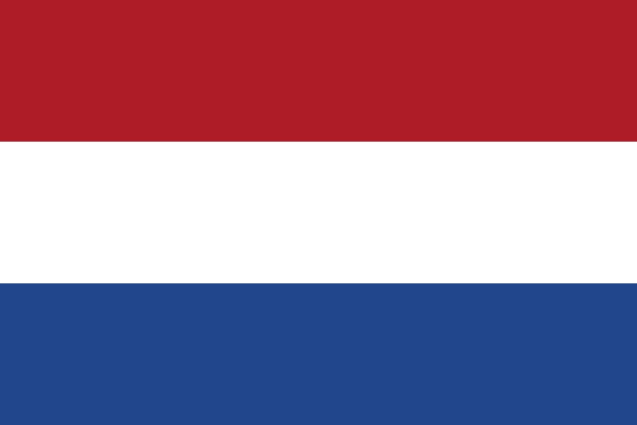

Financiering & vergoeding
De EZER financieren in Nederland.
Beantwoord één vraag en zie met wie je contact opneemt, wat je moet voorbereiden, wie de aanvraag indient en wat er daarna gebeurt.
Waarvoor heb je de EZER nodig?
De uitleg is in het Engels. De stapsgewijze pdf-gidsen zijn momenteel in het Nederlands.
Routeoverzicht.
Hier kun je alle routes lezen zonder eerst een situatie te kiezen.
Je vraagt zelf aan bij UWV met het formulier Voorziening of vergoeding aanvragen op mijn.uwv.nl. Dit geldt als je werkt of binnenkort begint, aan het re-integreren of solliciteren bent, of zelfstandig ondernemer bent.
J58 en leverancier Health2Work kunnen de aanvraag niet voor je indienen, maar helpen met productinformatie en een offerte. Binnen 14 dagen na de aanvraag volgt een medisch rapport.
Hetzelfde UWV-formulier geldt voor elk niveau, van basisschool tot universiteit, zolang er een inschrijving is bij de onderwijsinstelling.
Je vraagt zelf aan, voor jou of je kind. J58 en Health2Work helpen met productinformatie en een offerte, en binnen 14 dagen volgt een medisch rapport.
Neem contact op met het Wmo-loket van je gemeente. Een consulent bespreekt je situatie met je in een keukentafelgesprek.
De gemeente kan de EZER vergoeden als zorg in natura, of als persoonsgebonden budget (pgb) waarmee je hem rechtstreeks bij J58 koopt. Elke gemeente heeft eigen regels, dus kijk in de Wmo-atlas voor die van jou.
Laatst bijgewerkt: september 2026. Deze gids is een hulpmiddel, geen advies. De financierende instantie (bijvoorbeeld UWV of je gemeente) beslist over je aanvraag en aan deze pagina kunnen geen rechten worden ontleend.